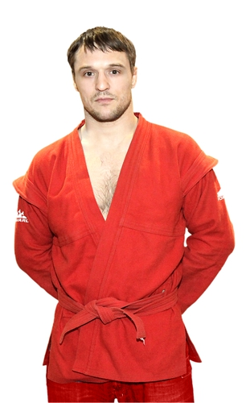
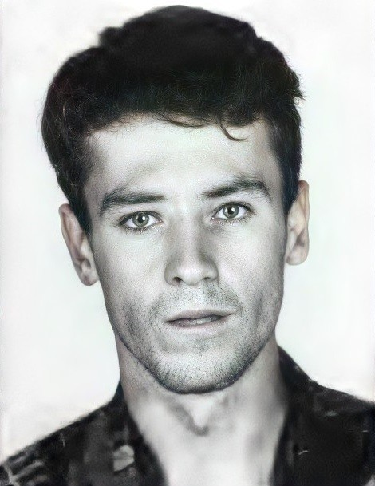

Доска почета
ЗТИ гордится своими студентами и преподавателями:
- Доска почёта
Ежегодно обновляется список лучших студентов, отличившихся в учёбе и общественной деятельности - Победы в конкурсах
Студенты института регулярно занимают призовые места в региональных и всероссийских олимпиадах и конкурсах.Фазлуктинов Ринат — Диплом I степени на Всероссийской олимпиаде «Информатика и информация».
Шабалин Алексей — Диплом II степени на Всероссийской онлайн-олимпиаде «Информатика и ИКТ».
Лебедев Никита— Диплом I степени на Международной викторине по математике.
Спортивные достижения

Алексей Александрович
российский самбист, многократный чемпион и призёр чемпионатов России, Европы и мира, Заслуженный мастер спорта России.

Владимир Константинович Голяс
Советский и российский легкоатлет, специалист по стипль-чезу. Выступал за сборные СССР, СНГ и России по лёгкой атлетике в 1989—1996 годах